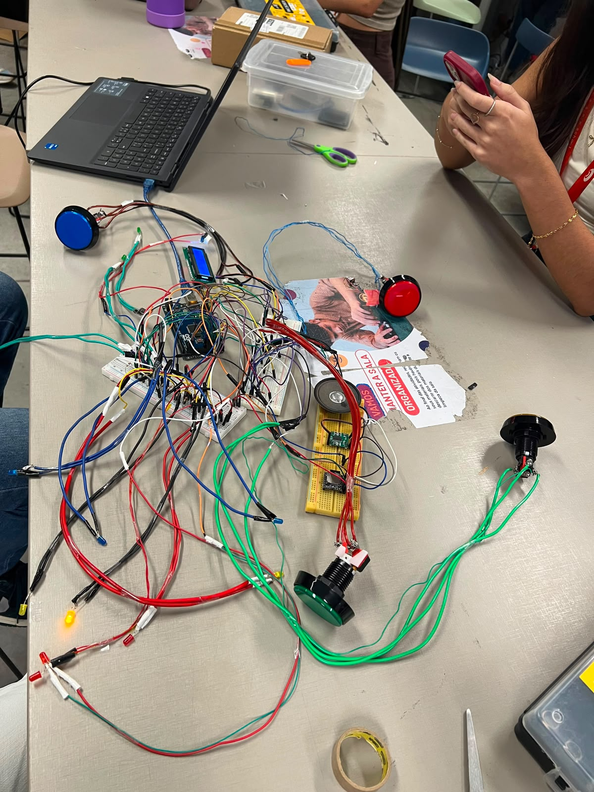

Projeto 1: Manguetown
No meu primeiro projeto desse período, recebemos a problemática de fazer um jogo para deficientes cognitivos intelectuais. Durante a construção da nossa ideia, decidimos fazer um jogo de tabuleiro interativo, com luzes de led e botões com luzes que facilitassem a forma de jogar um jogo como esse para pessoas dislexas. Para completar, os personagens ainda são folclores e referências ao nosso recife. Nosso projeto não está montado ainda, por isso está na foto somente o arduino.